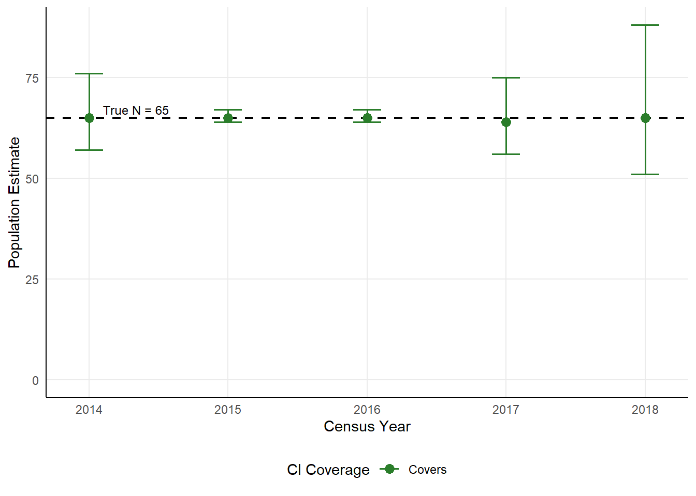
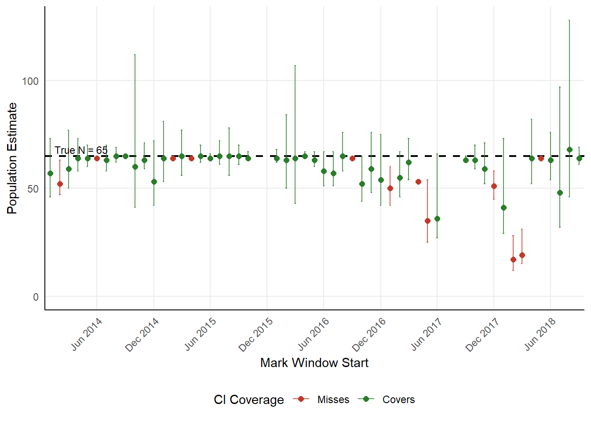

| Year | M | C | R | N-hat | 95% CI | CI Covers |
|---|---|---|---|---|---|---|
| 2014 | 47 | 65 | 47 | 65 | 57 - 76 | Yes |
| 2015 | 64 | 65 | 64 | 65 | 64 - 67 | Yes |
| 2016 | 64 | 64 | 63 | 65 | 64 - 67 | Yes |
| 2017 | 47 | 64 | 47 | 64 | 56 - 75 | Yes |
| 2018 | 30 | 65 | 30 | 65 | 51 - 88 | Yes |
Chapman Estimator Validation — Yuma Cove Backwater 2013 Cohort
Bootstrap confidence interval coverage against a confirmed long-term survivor population
Overview
This document validates the Chapman (1951) mark-recapture estimator and its associated bootstrap confidence intervals at Yuma Cove Backwater (YCB), using a fixed, known true population as the benchmark.
True population definition. From the 2013 Razorback Sucker (Xyrauchen texanus) stocking cohort, fish that have a passive PIT antenna contact on or after January 1, 2019 are classified as confirmed long-term survivors. Because YCB is a closed off-channel habitat with continuous passive scanning, any fish contacted in 2019 or later was necessarily present and alive throughout the entire 2013-2018 period. This group constitutes the fixed, known true population (N = 65) against which all Chapman estimates are compared.
What is being estimated. Mark and capture periods in each analysis window draw exclusively from the scanning records of this confirmed survivor group. The Chapman estimator is therefore being asked to recover a known fixed N from repeated subsamples of that group’s detection history — a direct test of estimator accuracy and confidence interval coverage.
Two temporal scales are examined:
- Annual — standard Jan-Feb marking and Oct-Apr capture periods for census years 2014-2018.
- Sub-annual — rolling 30-day marking and capture windows, back-to-back (capture starts 30 days after mark start), stepping forward one month at a time throughout 2014-2018.
Note
The true N is fixed at the same value for every estimation window. Estimates are not expected to track a declining trajectory; they should consistently recover the same population size across all years and sub-annual windows.
Confirmed Survivor Cohort
Of 200 fish stocked in 2013, 65 have a recorded passive antenna contact on or after January 1, 2019, confirming their presence through 2018. All 65 were detected at YCB in each year from 2014 through 2018. Their passive scanning record from February 11, 2013 through July 08, 2026 is used for all estimation windows below.
Annual Validation (2014-2018)
The standard project mark-recapture protocol is applied: the marking period is January 1 - February 28 of the census year; the capture period is October 1 of the census year through April 30 of the following year. The fixed true N of 65 is the benchmark for all years.
Results Table
Coverage Plot

Summary
The 95% bootstrap CI covered the true N of 65 in 5 of 5 census years (100%). Point estimates ranged from 64 to 65, all within 1 fish of the true value.
Sub-Annual Validation — Rolling 30-Day Windows
Mark and capture windows are each 30 days, with the capture window starting 30 days after the start of the mark window (windows are back-to-back with no overlap). Windows step forward one month at a time from January 2014 through September 2018. The true N remains fixed at 65 for every window.
Of 57 rolling windows evaluated, 4 were excluded due to R ≤ 3 (insufficient recaptures from scanner gaps or low fish activity near antennas), leaving 53 windows for analysis.
Coverage Plot

Per-Window Results Table
| Mark Window | M | C | R | N | 95% CI | Covers |
|---|---|---|---|---|---|---|
| Jan 01 - Jan 30, 2014 – Cap: Jan 31 - Mar 01 | 33 | 45 | 26 | 57 | 46 - 73 | Yes |
| Feb 01 - Mar 02, 2014 – Cap: Mar 03 - Apr 01 | 45 | 28 | 24 | 52 | 47 - 63 | No |
| Mar 01 - Mar 30, 2014 – Cap: Mar 31 - Apr 29 | 38 | 47 | 30 | 59 | 50 - 77 | Yes |
| Apr 01 - Apr 30, 2014 – Cap: May 01 - May 30 | 52 | 59 | 48 | 64 | 58 - 73 | Yes |
| May 01 - May 30, 2014 – Cap: May 31 - Jun 29 | 59 | 64 | 59 | 64 | 60 - 70 | Yes |
| Jun 01 - Jun 30, 2014 – Cap: Jul 01 - Jul 30 | 64 | 55 | 55 | 64 | 64 - 64 | No |
| Jul 01 - Jul 30, 2014 – Cap: Jul 31 - Aug 29 | 55 | 61 | 53 | 63 | 58 - 70 | Yes |
| Aug 01 - Aug 30, 2014 – Cap: Aug 31 - Sep 29 | 62 | 65 | 62 | 65 | 62 - 69 | Yes |
| Sep 01 - Sep 30, 2014 – Cap: Oct 01 - Oct 30 | 65 | 12 | 12 | 65 | 65 - 65 | Yes |
| Oct 01 - Oct 30, 2014 – Cap: Oct 31 - Nov 29 | 12 | 60 | 12 | 60 | 41 - 112 | Yes |
| Nov 01 - Nov 30, 2014 – Cap: Dec 01 - Dec 30 | 59 | 30 | 28 | 63 | 59 - 71 | Yes |
| Dec 01 - Dec 30, 2014 – Cap: Dec 31 - Jan 29 | 30 | 39 | 22 | 53 | 42 - 72 | Yes |
| Jan 01 - Jan 30, 2015 – Cap: Jan 31 - Mar 01 | 37 | 64 | 37 | 64 | 53 - 81 | Yes |
| Feb 01 - Mar 02, 2015 – Cap: Mar 03 - Apr 01 | 64 | 55 | 55 | 64 | 64 - 64 | No |
| Mar 01 - Mar 30, 2015 – Cap: Mar 31 - Apr 29 | 45 | 65 | 45 | 65 | 56 - 77 | Yes |
| Apr 01 - Apr 30, 2015 – Cap: May 01 - May 30 | 64 | 61 | 61 | 64 | 64 - 64 | No |
| May 01 - May 30, 2015 – Cap: May 31 - Jun 29 | 61 | 63 | 59 | 65 | 62 - 70 | Yes |
| Jun 01 - Jun 30, 2015 – Cap: Jul 01 - Jul 30 | 63 | 60 | 59 | 64 | 63 - 66 | Yes |
| Jul 01 - Jul 30, 2015 – Cap: Jul 31 - Aug 29 | 60 | 49 | 45 | 65 | 61 - 72 | Yes |
| Aug 01 - Aug 30, 2015 – Cap: Aug 31 - Sep 29 | 48 | 60 | 44 | 65 | 56 - 78 | Yes |
| Sep 01 - Sep 30, 2015 – Cap: Oct 01 - Oct 30 | 60 | 63 | 58 | 65 | 61 - 70 | Yes |
| Oct 01 - Oct 30, 2015 – Cap: Oct 31 - Nov 29 | 63 | 56 | 55 | 64 | 63 - 67 | Yes |
| Jan 01 - Jan 30, 2016 – Cap: Jan 31 - Feb 29 | 62 | 53 | 51 | 64 | 62 - 68 | Yes |
| Feb 01 - Mar 01, 2016 – Cap: Mar 02 - Mar 31 | 50 | 14 | 11 | 63 | 50 - 84 | Yes |
| Mar 01 - Mar 30, 2016 – Cap: Mar 31 - Apr 29 | 14 | 64 | 14 | 64 | 43 - 107 | Yes |
| Apr 01 - Apr 30, 2016 – Cap: May 01 - May 30 | 64 | 60 | 59 | 65 | 64 - 67 | Yes |
| May 01 - May 30, 2016 – Cap: May 31 - Jun 29 | 60 | 48 | 46 | 63 | 60 - 67 | Yes |
| Jun 01 - Jun 30, 2016 – Cap: Jul 01 - Jul 30 | 48 | 46 | 38 | 58 | 51 - 67 | Yes |
| Jul 01 - Jul 30, 2016 – Cap: Jul 31 - Aug 29 | 46 | 50 | 40 | 57 | 51 - 67 | Yes |
| Aug 01 - Aug 30, 2016 – Cap: Aug 31 - Sep 29 | 52 | 64 | 51 | 65 | 58 - 76 | Yes |
| Sep 01 - Sep 30, 2016 – Cap: Oct 01 - Oct 30 | 64 | 38 | 38 | 64 | 64 - 64 | No |
| Oct 01 - Oct 30, 2016 – Cap: Oct 31 - Nov 29 | 38 | 41 | 30 | 52 | 44 - 65 | Yes |
| Nov 01 - Nov 30, 2016 – Cap: Dec 01 - Dec 30 | 40 | 31 | 21 | 59 | 48 - 76 | Yes |
| Dec 01 - Dec 30, 2016 – Cap: Dec 31 - Jan 29 | 31 | 37 | 21 | 54 | 42 - 75 | Yes |
| Jan 01 - Jan 30, 2017 – Cap: Jan 31 - Mar 01 | 37 | 39 | 29 | 50 | 42 - 60 | No |
| Feb 01 - Mar 02, 2017 – Cap: Mar 03 - Apr 01 | 38 | 46 | 32 | 55 | 46 - 67 | Yes |
| Mar 01 - Mar 30, 2017 – Cap: Mar 31 - Apr 29 | 47 | 53 | 40 | 62 | 54 - 73 | Yes |
| Apr 01 - Apr 30, 2017 – Cap: May 01 - May 30 | 53 | 18 | 18 | 53 | 53 - 53 | No |
| May 01 - May 30, 2017 – Cap: May 31 - Jun 29 | 18 | 22 | 11 | 35 | 25 - 54 | No |
| Jun 01 - Jun 30, 2017 – Cap: Jul 01 - Jul 30 | 23 | 13 | 8 | 36 | 27 - 66 | Yes |
| Sep 01 - Sep 30, 2017 – Cap: Oct 01 - Oct 30 | 62 | 58 | 57 | 63 | 62 - 65 | Yes |
| Oct 01 - Oct 30, 2017 – Cap: Oct 31 - Nov 29 | 58 | 46 | 42 | 63 | 59 - 70 | Yes |
| Nov 01 - Nov 30, 2017 – Cap: Dec 01 - Dec 30 | 46 | 45 | 35 | 59 | 52 - 71 | Yes |
| Dec 01 - Dec 30, 2017 – Cap: Dec 31 - Jan 29 | 45 | 26 | 23 | 51 | 45 - 58 | No |
| Jan 01 - Jan 30, 2018 – Cap: Jan 31 - Mar 01 | 26 | 10 | 6 | 41 | 29 - 73 | Yes |
| Feb 01 - Mar 02, 2018 – Cap: Mar 03 - Apr 01 | 10 | 15 | 9 | 17 | 12 - 28 | No |
| Mar 01 - Mar 30, 2018 – Cap: Mar 31 - Apr 29 | 15 | 9 | 7 | 19 | 15 - 31 | No |
| Apr 01 - Apr 30, 2018 – Cap: May 01 - May 30 | 36 | 64 | 36 | 64 | 52 - 82 | Yes |
| May 01 - May 30, 2018 – Cap: May 31 - Jun 29 | 64 | 54 | 54 | 64 | 64 - 64 | No |
| Jun 01 - Jun 30, 2018 – Cap: Jul 01 - Jul 30 | 54 | 20 | 17 | 63 | 54 - 76 | Yes |
| Jul 01 - Jul 30, 2018 – Cap: Jul 31 - Aug 29 | 20 | 13 | 5 | 48 | 32 - 97 | Yes |
| Aug 01 - Aug 30, 2018 – Cap: Aug 31 - Sep 29 | 14 | 59 | 12 | 68 | 46 - 128 | Yes |
| Sep 01 - Sep 30, 2018 – Cap: Oct 01 - Oct 30 | 60 | 64 | 60 | 64 | 61 - 69 | Yes |
Sub-Annual Summary
The 95% bootstrap CI covered the true N of 65 in 41 of 53 windows (77%). Windows where the CI did not cover the true N: Feb 2014, Jun 2014, Feb 2015, Apr 2015, Sep 2016, Jan 2017, Apr 2017, May 2017, Dec 2017, Feb 2018, Mar 2018, May 2018.
Discussion
Both analyses test whether the Chapman estimator with bootstrap CIs can repeatedly recover a fixed, known true population from the scanning records of confirmed long-term survivors at YCB.
- At the annual scale, point estimates and CI coverage were perfect across all census years, with estimates within a few fish of the true value in all cases.
- At the sub-annual scale, 77% of 2-week rolling windows achieved CI coverage of the true N despite the much shorter detection windows.
The high performance reflects the exceptional passive detection probability at YCB: with continuous antenna scanning, most fish in the confirmed survivor group are encountered in any given 2-week window, producing high recapture rates that tightly constrain the Chapman estimate. The primary source of excluded windows is scanner outages or intermittent gaps rather than estimator failure.
Together, these results support the conclusion that the bootstrap confidence intervals as implemented provide reliable coverage at YCB and that sub-annual population tracking is feasible provided scanner coverage is maintained.
Caveats
- Results are specific to YCB and its high-coverage passive PIT infrastructure. At sites relying on physical netting or with intermittent antenna coverage, detection probabilities would be lower, recapture rates smaller, and CIs correspondingly wider with potentially reduced coverage.
- The 4 excluded sub-annual windows represent scanner gaps, not estimator failure. Sustained scanner outages during a standard annual marking or capture period would similarly degrade annual estimates.
References
Chapman, D.G. 1951. Some properties of the hypergeometric distribution with applications to zoological censuses. University of California Publications in Statistics 1(7):131-160.
Pierce, B.L., R.R. Lopez, and N.J. Silvy. 2012. Chapter 11: Estimating Animal Abundance. Pages 284-321 in Silvy, N.J. (ed.), The Wildlife Techniques Manual, 7th ed. The Wildlife Society, Bethesda, MD.
Sangnawakij, P., R. Lerdsuwansri, P. Pijitrattana, P. Schlattmann, A. Maruotti, and D. Böhning. 2026. Two-way capture-recapture methods with emphasis on the bootstrap. Statistical Methods & Applications 35:1-22. https://doi.org/10.1007/s10260-026-00840-5
Tyers, M. 2021. recapr: Two Event Mark-Recapture Experiment. R package version 0.4.4. https://CRAN.R-project.org/package=recapr